8 Multilevel Modelling Practical 7 (Week 8)
8.1 Instructions - start here!
Exercise 1 involves the analysis of the data set used in Example 2 of the week 7 lecture. Exercise 2 considers the data set on survival times from Example 3. Exercise 3 involves a logistic regression model for Binomial data.
8.2 Exercise 1 (Aids data: Example 2 from lecture 7)
Read in and visualize the data:
aids <- read.table("https://andygolightly.github.io/teaching/MATH43515/aids.asc", header = TRUE)
plot(aids, type="h")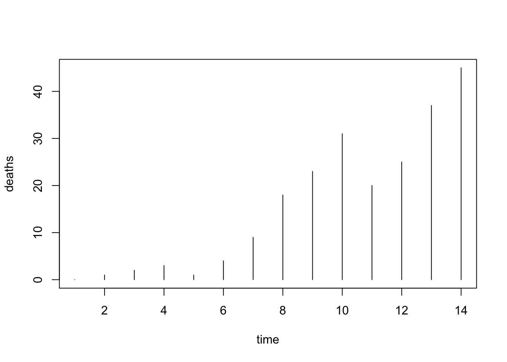
Let’s first ignore the fact that the data are counts and fit a simple linear regression model of the form
\[y_i = \beta_0 +\beta_1 x_i + \epsilon_{i},\quad i=1,\ldots,14\] where \(x_i\) denotes the \(i\)th time point.
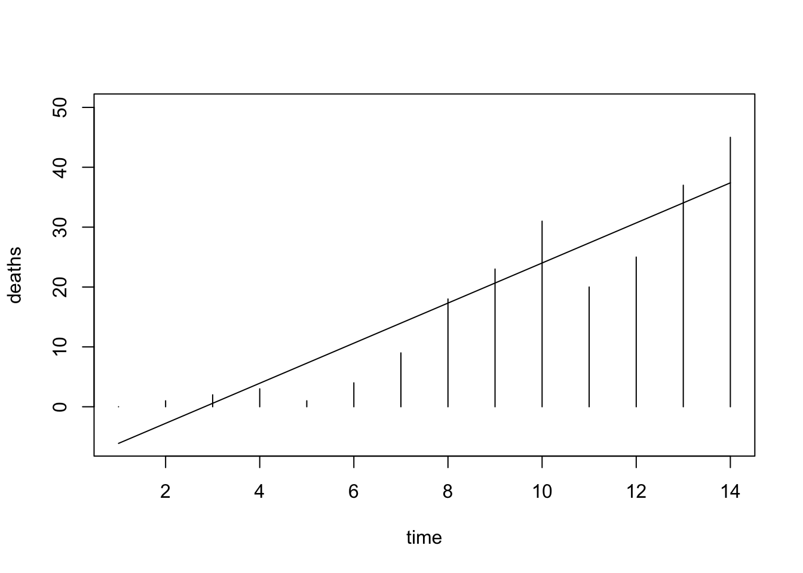
There are multiple issues here, in addition to ignoring the discrete nature of the response variable.
\(~\)
Let’s use the Poisson distribution to model the response. Recall that if \(Y\sim Po(\lambda)\) then \(Y\) takes values \(0,1,\ldots,\) with probabilities
\[f(y)=\frac{e^{-\lambda}\lambda^y}{y!}=\exp\{y\log (\lambda)-\lambda-\log(y!)\}\] with the latter in exponential family form. The mean of \(Y\) is \(\lambda\). We can check this via simulation:
## [1] 1.9981## [1] 1.964893(It turns out that the variance is also \(\lambda\). Try changing \(\lambda\) and the number of simulations.)
Now, we can identify the natural link function as \(\log(\cdot)\). Hence, we will fit a GLM with \(\log(\lambda_i)=\beta_0+\beta_1 x_i\).
Fit a Poisson GLM and display the model summary:
##
## Call:
## glm(formula = deaths ~ time, family = poisson(link = log), data = aids)
##
## Coefficients:
## Estimate Std. Error z value Pr(>|z|)
## (Intercept) 0.33963 0.25119 1.352 0.176
## time 0.25652 0.02204 11.639 <2e-16 ***
## ---
## Signif. codes: 0 '***' 0.001 '**' 0.01 '*' 0.05 '.' 0.1 ' ' 1
##
## (Dispersion parameter for poisson family taken to be 1)
##
## Null deviance: 207.272 on 13 degrees of freedom
## Residual deviance: 29.654 on 12 degrees of freedom
## AIC: 86.581
##
## Number of Fisher Scoring iterations: 5Add the fitted curve (expected number of aids cases as a function of time) to the plot with:
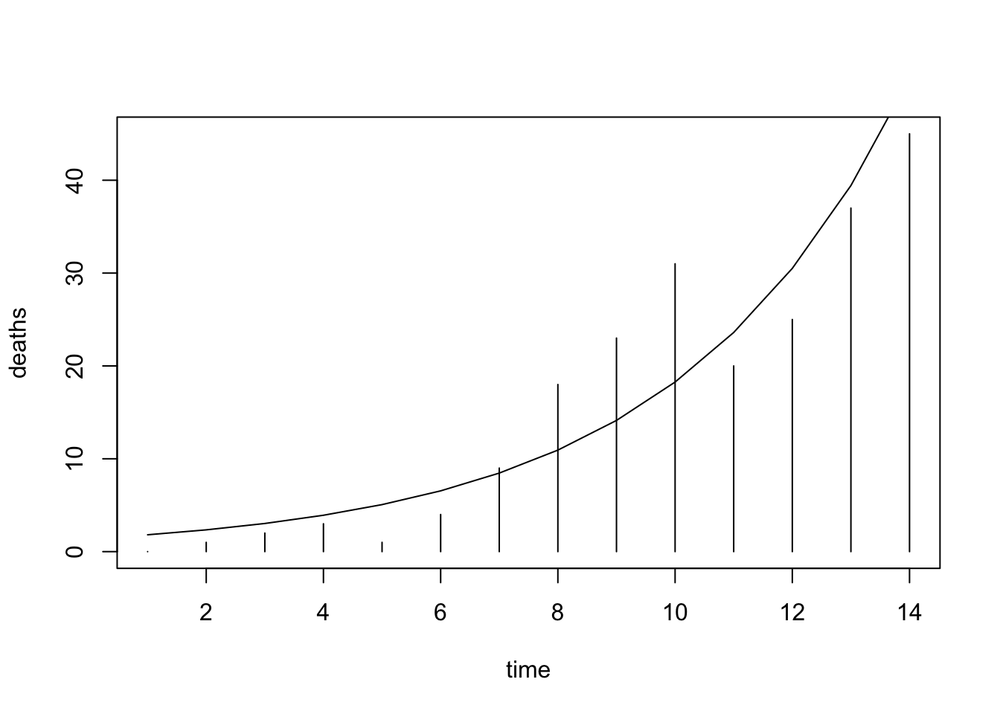
TASK: Reproduce this plot using ggplot. Hint: this will require geom_segment().
Click for solution
Reproduce the plot in ggplot:
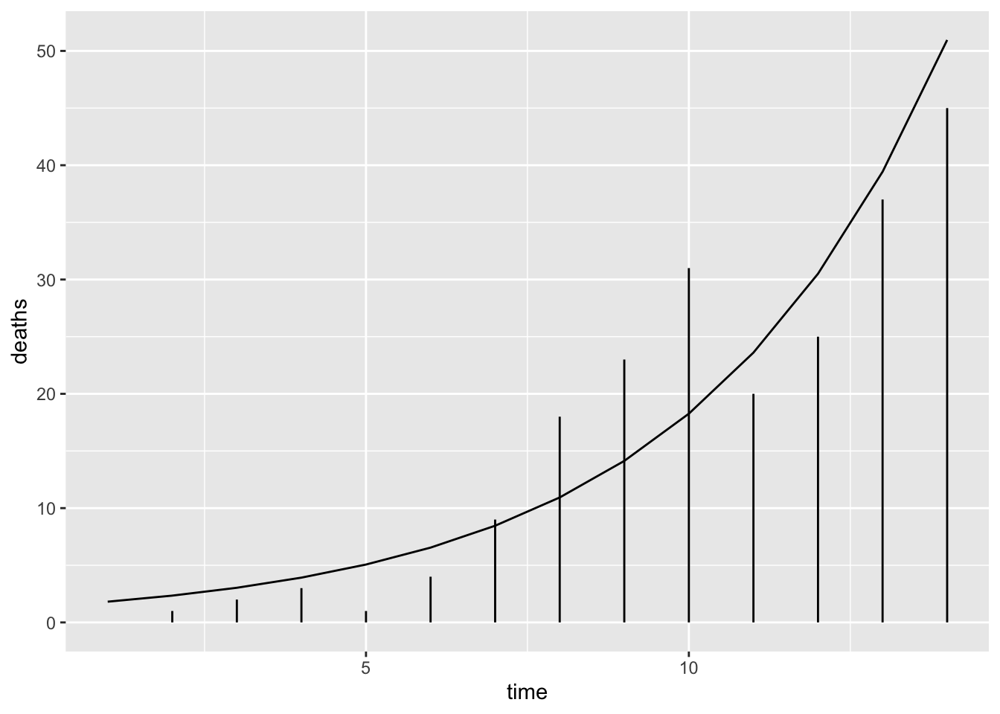\(~\)
TASK: What would be the predicted number of deaths in month 15?
There are three ways of answering this question:
- Manually, by implementing \(\exp(\hat{\beta}_0+\hat{\beta}_1\times 15)\);
- Using function
predictto obtain \(\hat{\beta}_0+\hat{\beta}_1\times 15\), but still exponentiating the output; - Using function
predictwith optiontype="response", also avoiding the manual transformation.
Try at least two of these and make sure that results match!
Click for solution
Calculate the predicted number of deaths in month 15:
## 1
## 65.85714## 1
## 65.85714## [1] 65.8316\(~\)
8.3 Exercise 2 (Leukaemia data: Example 3 from lecture 7)
Read in and display the data
leu <- read.table("https://andygolightly.github.io/teaching/MATH43515/leukaemie.asc", header=TRUE)
plot(leu, xlab="log(# white blood cells)",ylab="survival time")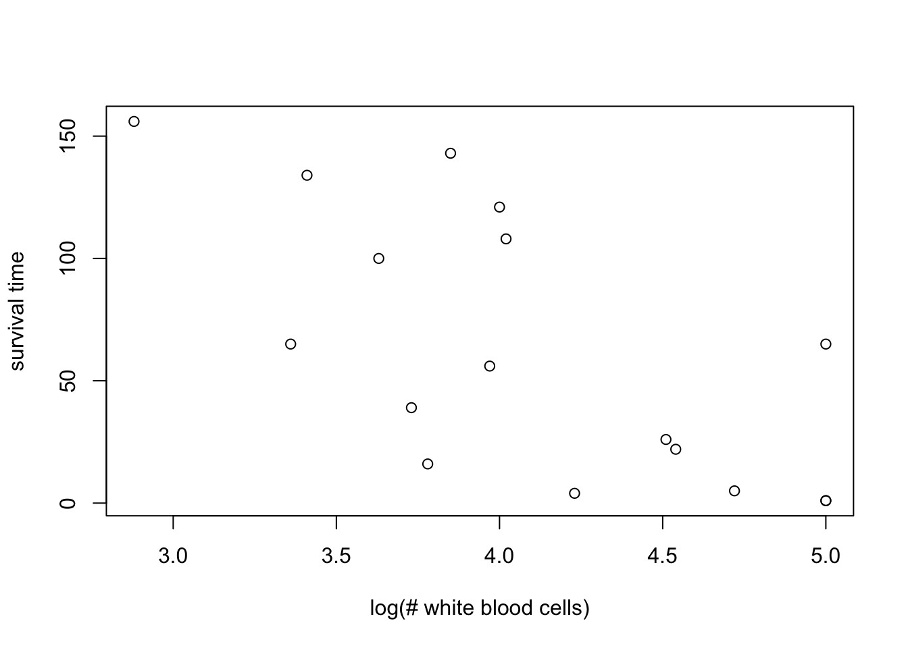
Let’s fit a simple linear regression model of the form
\[y_i = \beta_0 +\beta_1 x_i + \epsilon_{i},\quad i=1,\ldots,14\] where \(y_i\) denotes survival time and \(x_i\) denotes the \(i\)th \(\log_{10}\) white blood cell count.
lm2 <- lm(time~wbc, data=leu)
plot(leu, xlab="log(# white blood cells)",ylab="survival time")
lines(leu$wbc, predict(lm2))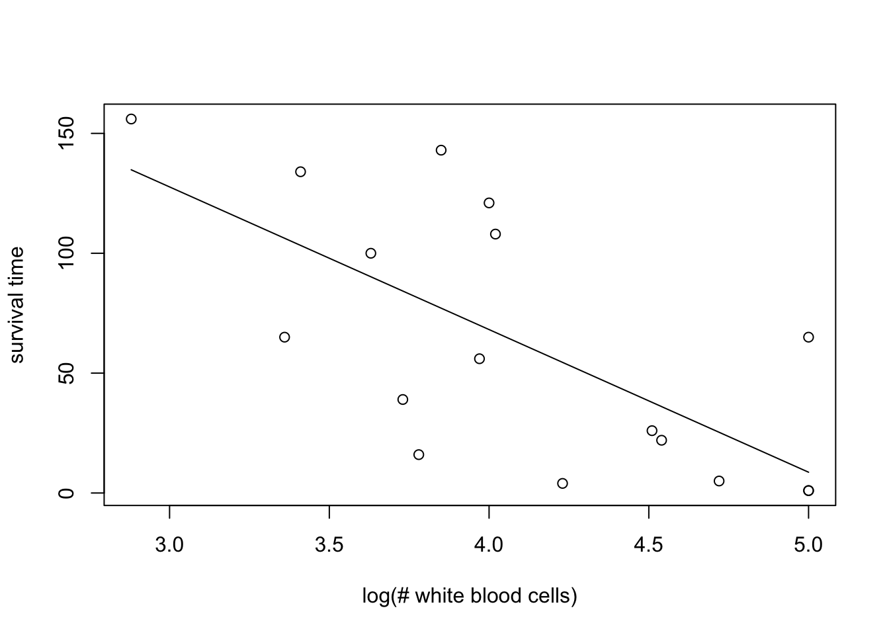
The model will predict a negative survival time for a \(\log_{10}\) white blood cell count greater than around 5.15. We could fit a model of the form
\[\log y_i = \beta_0 +\beta_1 x_i + \epsilon_{i},\quad i=1,\ldots,14\] which would circumvent this issue. (In fact, this would be assuming a lognormal model for the response.) However, plotting the log response against the covariate gives:
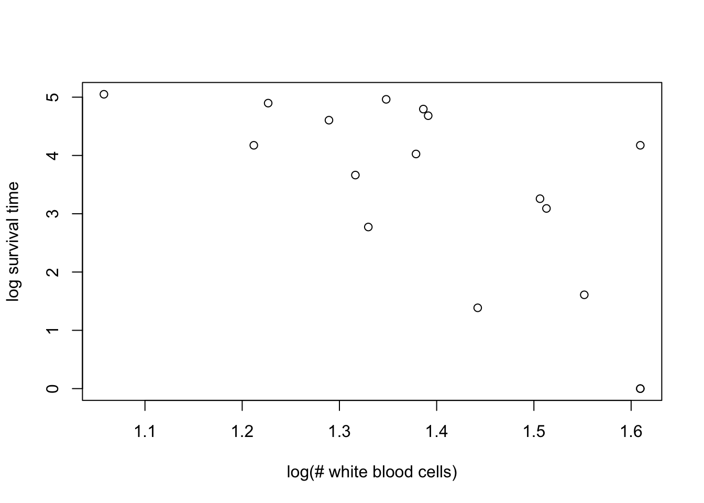
for which there is some suggestion of heteroscedasticity of errors about a hypothetical straight line fit.
\(~\)
We will instead model the expected response with a Gamma distribution.
Use the following illustrative code to visualize the density function of the Gamma distribution for shape parameters 1, 2, 3, 4 and 5 (and use this to make clear to yourself why this distribution is useful for modelling waiting times).
y <- seq(0,50, by=0.1)
shape <- c(1,2,3,4,5)
rate <- c(1,1,1,1,1)
plot(y, dgamma(y, shape[1], rate[1]), type="l",xlab="y",ylab="f(y)")
for (j in 2:4)
{
lines(y, dgamma(y, shape[j], rate[j]), col=j)
}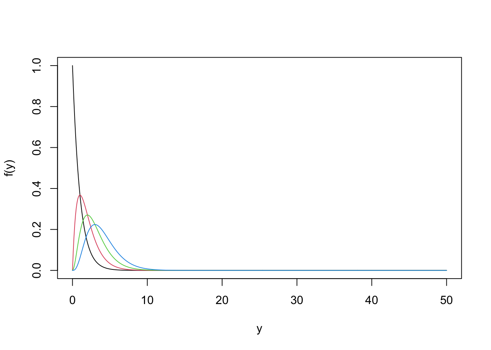
If \(Y\sim \text{Gamma}(a,b)\) for shape and rate parameters \(a\) and \(b\), the mean (expectation) of \(Y\) is \(\mu=a/b\). Let’s consider a GLM with a log link function so that \(\log(\mu_i) = \beta_0+\beta_1 x_i\) where \(x_i\) is the \(i\)th value of \(\log_{10}\) white blood cell count.
TASK: Fit a generalized linear model with time as response, and wbc as predictor. Use a Gamma response distribution and a log link. Save the model as glm2.
Click for solution
Fit a generalized linear model with time as response, and wbc as predictor. Use a Gamma response distribution and a log link:
##
## Call:
## glm(formula = time ~ wbc, family = Gamma(link = log), data = leu)
##
## Coefficients:
## Estimate Std. Error t value Pr(>|t|)
## (Intercept) 8.4775 1.6034 5.287 9.13e-05 ***
## wbc -1.1093 0.3872 -2.865 0.0118 *
## ---
## Signif. codes: 0 '***' 0.001 '**' 0.01 '*' 0.05 '.' 0.1 ' ' 1
##
## (Dispersion parameter for Gamma family taken to be 0.9388638)
##
## Null deviance: 26.282 on 16 degrees of freedom
## Residual deviance: 19.457 on 15 degrees of freedom
## AIC: 173.97
##
## Number of Fisher Scoring iterations: 8\(~\)
Now plot the fitted response as a function of wbc by running the following code:
plot(leu, xlab="log(number of white blood cells)",ylab="survival time")
lines(leu$wbc[order(leu$wbc)], predict(glm2, type="response")[order(leu$wbc)])TASK: In the above, why is the use of order necessary?
Click for solution
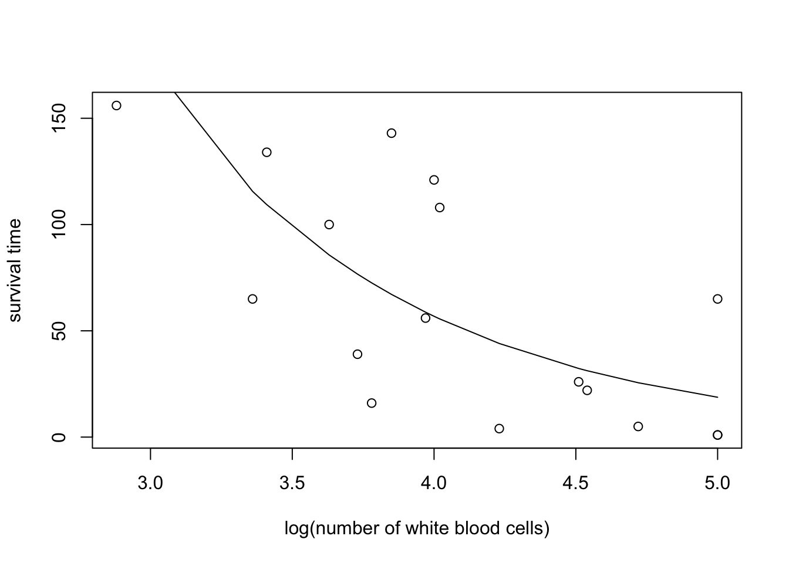
Note that thelines function will draw straight lines between x values specified by wbc and y values specified by the corresponding prediction. Without ordering wbc (and the corresponding predictions accordingly), the resulting plot will look rather strange! Try it out!
\(~\)
TASK: recreate the above plot using ggplot.
Click for solution
Using ggplot:
\(~\)
TASK: Predict the survival time for a white blood cell count of 160.
Click for solution
Predict the survival time for a white blood cell count of 160:
## 1
## 416.7432\(~\)
HARDER: What does the following code do? (assuming that glm3 contains the fitted model). After spending some time thinking about this, uncover the solution for a bonus plot.
out <- predict(glm2,newdata=data.frame(wbc=log10(160)), type="link",se.fit=TRUE)
c(exp(out$fit-2*out$se.fit),exp(out$fit+2*out$se.fit))Click for solution
The following code produces an approximate 95% confidence interval for the expected survival time given a white blood cell count of 160.
out <- predict(glm2,newdata=data.frame(wbc=log10(160)), type="link",se.fit=TRUE)
c(exp(out$fit-2*out$se.fit),exp(out$fit+2*out$se.fit))## 1 1
## 89.45865 1941.39827Note that we first find an interval for the linear predictor and then run this through the response function (which is the exp function for this example).
Bonus - overlay a 95% confidence interval:
out <- predict(glm2, type="link",se.fit=TRUE)
leu$lower <- exp(out$fit-2*out$se.fit)
leu$upper <- exp(out$fit+2*out$se.fit)
ggplot(leu,aes(x=wbc,y=time))+
geom_ribbon(aes(ymin = lower, ymax = upper), alpha = 0.1)+
geom_point()+
geom_line(aes(x=wbc[order(wbc)],y=pred[order(wbc)]))+
xlab("log(number of white blood cells)")+
ylab("survival time")\(~\)
8.4 Exercise 3: Toxoplasmosis data (Binomial logistic regression)
The so-called rainfall or toxoplasmosis data give the number of subjects (Cases) out of (Total) testing positively for toxoplasmosis in each of 34 cities in El Salvador. The covariate Rain is the the annual rainfall in mm. Please load the data and carry out the following operation to create a variable x giving the annual rainfall per 1000mm:
This is, again, an example for logistic regression. We want to model a probability of “success” (occurence of a binary event; here toxoplasmosis infection) as a function of covariates (here: Rain). However, here the situation is different to the shuttle example. Now the response is not just Bernoulli (failure or non-failure), but Binomial, where we have, for each observation, the number of Cases (\(y\)) out of total tests carried out (\(n\)). Note that the model is now \(Y \sim \text{Binomial}(n,\pi)\), where the observed ratio \(y/n\) can be interpreted as an empirical estimate of the probability, \(\pi\), of “success”. The fitting methodology does however not use this ratio directly. One needs to give the full vectors of successes and non-successes, \(y\) and \(n-y\), to glm, as follows:
toxo.glm <- glm(cbind(Cases,Total-Cases) ~ x, family=binomial(link=logit), data=rainfall)
summary(toxo.glm)##
## Call:
## glm(formula = cbind(Cases, Total - Cases) ~ x, family = binomial(link = logit),
## data = rainfall)
##
## Coefficients:
## Estimate Std. Error z value Pr(>|z|)
## (Intercept) 0.3424 0.8522 0.402 0.688
## x -0.1562 0.4428 -0.353 0.724
##
## (Dispersion parameter for binomial family taken to be 1)
##
## Null deviance: 74.212 on 33 degrees of freedom
## Residual deviance: 74.087 on 32 degrees of freedom
## AIC: 168.78
##
## Number of Fisher Scoring iterations: 3An alternative way of supplying this information is as follows.
##
## Call: glm(formula = Cases/Total ~ x, family = binomial(link = logit),
## data = rainfall, weights = Total)
##
## Coefficients:
## (Intercept) x
## 0.3424 -0.1562
##
## Degrees of Freedom: 33 Total (i.e. Null); 32 Residual
## Null Deviance: 74.21
## Residual Deviance: 74.09 AIC: 168.8\(~\)
TASK: Check whether the model fit improves when including higher powers of x (quadratic, cubic,…). Consider the value of AIC to answer this question.
Hint: Functions of variables can be included into the linear predictor using I(.).
Click for solution
toxo2.glm <- glm(Cases/Total ~ x+I(x^2), family=binomial(link=logit),
weights= Total, data=rainfall)
toxo2.glm##
## Call: glm(formula = Cases/Total ~ x + I(x^2), family = binomial(link = logit),
## data = rainfall, weights = Total)
##
## Coefficients:
## (Intercept) x I(x^2)
## 0.308739 -0.121636 -0.008778
##
## Degrees of Freedom: 33 Total (i.e. Null); 31 Residual
## Null Deviance: 74.21
## Residual Deviance: 74.09 AIC: 170.8toxo3.glm <- glm(Cases/Total ~ x+I(x^2)+I(x^3), family=binomial(link=logit),
weights= Total, data=rainfall)
toxo3.glm##
## Call: glm(formula = Cases/Total ~ x + I(x^2) + I(x^3), family = binomial(link = logit),
## data = rainfall, weights = Total)
##
## Coefficients:
## (Intercept) x I(x^2) I(x^3)
## -290.17 449.98 -231.13 39.32
##
## Degrees of Freedom: 33 Total (i.e. Null); 30 Residual
## Null Deviance: 74.21
## Residual Deviance: 62.63 AIC: 161.3toxo.glm.
\(~\)
TASK: Using your model settled on just above, predict the ratio of toxoplasmosis infections for a city in El Salvador with annual rainfall of 2000mm.
\(~\)
TASK: Compute the predicted toxoplasmsosis incidence as a function of rainfall. Plot the fitted curve versus rainfall.
Click for solution
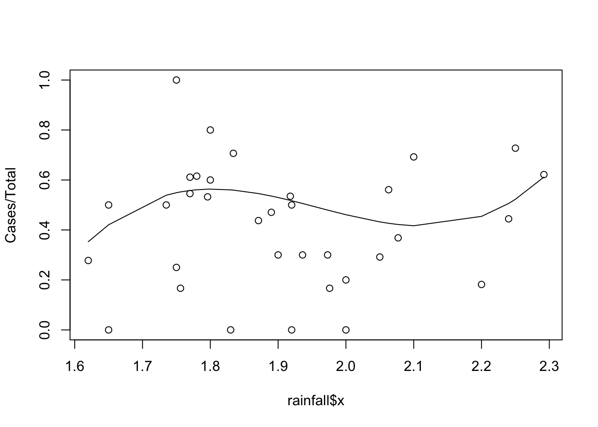\(~\)
TASK: Reproduce the plot using ggplot2.
Click for solution
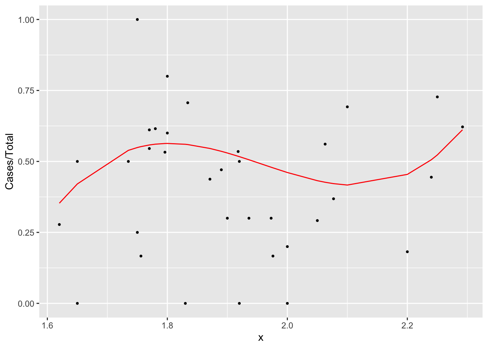\(~\)
TASK (harder) Add confidence bands for the fitted curve to the just created plot. Hint: use geom_smooth with method=glm and specify a formula for the model.
Click for solution
Rather than obtain an interval for the linear predictor before running through the response function, we can use geom_smooth.
How do you reconcile the relatively narrow bounds with the fact that so many observations lie scattered well outside those bounds?
\(~\)